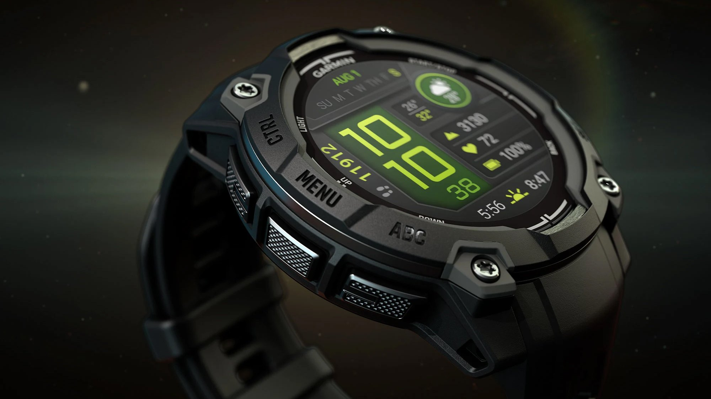

Carnet
Notes,
au fil de l'eau.
Ce qui ne mérite pas un article complet mais mérite d'être noté. Une sortie, un objet essayé quelques jours, un conseil qui tient en trois lignes, une réflexion sur ce qu'on garde et ce qu'on laisse. Rien de construit, rien de définitif.
Entrées
Réception d'un Garmin Instinct 3 Amoled
J'ai reçu il y a environ une semaine une montre connectée de la marque Garmin, que j'ai acheté bien entendu. J'envisage de faire un article plus complet dessus, car j'ai été étonné pour son prix qu'elle soit aussi qualitative. Pour le moment je ne suis pas déçu de mon achat, mais je vais essayer de la pousser dans ses retranchements.

Naissance
C'est aujourd'hui que le carnet est ouvert. Il n'y a pas de plan, pas de rythme, juste des notes au fil de l'eau. Je vous laisse un lien en dessous pour découvrir le projet Retex, qui est la suite logique de ce carnet : des articles plus longs, plus construits, sur les sujets qui méritent un peu plus qu'une note.